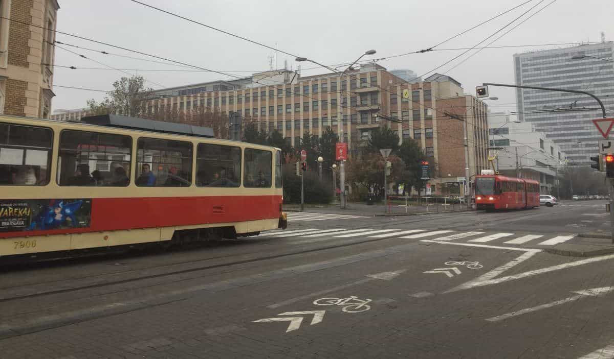
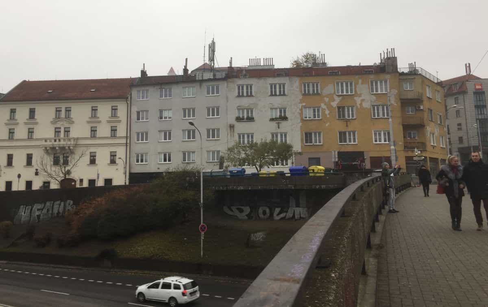

Kyle is an entrepreneur and nomad who has been living abroad since 2016. He blogs at This Is Trouble. Follow him on Facebook.


Last week, I ventured to a city and country you generally don’t hear a lot about: Bratislava, Slovakia.
Despite lying dead-center between two major capital cities (Vienna and Budapest), Bratislava tends to go relatively unnoticed in the grand scheme of things. Men aren’t quite flocking there to find a foreign girl, or even for drunken stag parties (setting aside the kids in the movie Eurotrip ending up in Bratislava). It’s certainly not a tourist destination you hear Western people dreaming of.
After spending just a couple of days in the Slovak capital, I thought I’d share some thoughts.

I know it’s what everyone wants to know.
I’m happy to say that Slovakian women are near the cream of the crop. They’re beautiful with a good amount of diversity—blondes, brunettes, and even a few redheads.
Overall, they aren’t as hot as Ukrainian women. They are thinner and hotter than Polish women. Their hair is not as nice as Lithuanian girls, but it’s not that far off, either.
The English levels of most people in Bratislava is high. I suspect, like most places in Europe, that those levels drop off drastically as soon as you venture outside of the major city (or even to the suburbs. People were genuinely helpful—bartenders were happy to go to great lengths to help pick a beer, and everyone on the streets was helpful with navigating their poor public transportation system (more on that later).
However, despite the beauty levels and charm of the locals, I really can’t rave about Bratislava as a city.
Why?
For those of you who have traveled to the edges of Eastern Europe, you likely know what I mean when I say “FSU-style dump” (even though Slovakia was not a part of the FSU and had their own Communist overhaul in 1989 with the Velvet Revolution). This means communist buildings on every block, and a general dull, grey drab that seems to envelope the entire city. In most of these cities, you have to at least walk a kilometer out of the city center to have this take over.
That wasn’t the case in Bratislava. As soon as you step out of the main square (which was quite nice—but most European central areas are), the dullness begins. See for yourself:

This picture was taken from the overpass over the road leading to their iconic UFO Bridge:

As you can see, these buildings lack any character and certainly aren’t well-maintained, despite them basically being in the city center. While this isn’t a problem on paper, it does come with issues for anyone looking to spend considerable time in Slovakia. For most of us digital nomads, it’s nice to have a pleasant place to live. One that makes you want to get up everyday. Not one that drags you towards depression.
In the base of Bratislava, it leans towards the latter. It’s a far cry from what the tourism department would like you to believe:

Simply put, Bratislava is not a place I’d care to spend more than a few days for any short-term trip. You’ll have much more fun in places like Budapest, Prague, or Krakow.
Things might be slightly different if I had a different objective—such as hunting for a longer-term relationship, or perhaps buckling in and trying to build a new website or writing a new book.
Slovakian food was actually quite good. They had some interesting dishes with some real flavor, as well as excellent beer. Bratislava also has enough international influence that there are a variety of different cuisines available. In addition to the usual Irish and English style pubs, I also stumbled across Cuban, Mexican, and a wide variety of Asian restaurants.
As mentioned before, the public transportation is poor. There is no actual integration with basic apps like Google Maps that will tell you which bus or tram to take to get to a destination. Normally, I’d be happy to go the old-school route and pour over the public transportation maps—but that was not the case in Bratislava.
Nearly every transportation map at every metro and tram was mysteriously missing critical pieces of information. Trams that were not listed as not stopping at that stop were showing up. Buses that were supposed to come by would never show. It was normal for all means of transit to arrive three minutes late. The problem is not so much a lack of modern technology, it’s fundamental.
A lack of simple execution and keeping information up to date is what makes the Slovakian capital’s public transportation system so lackluster.
Finally, the cost of living is quite reasonable. A decent meal in a mid-level restaurant will run you about 5 euros. A quality beer will be somewhere between 1 and 2. Short-term apartment rentals can be found in the center in the range of $30-$40 a night.
I go into a little bit more detail about the quality of life in this video.

The general consensus I got from my brief trip was this: the top-end Slovakians have moved on. This means that the most beautiful girls have migrated out of the city in pursuit of opportunities in major EU metropolitan areas such as London, Paris, or Milan. The most driven and successful men have likewise taken opportunities outside of their home country.
Slovakia’s membership in the Schengen area makes it easy for them to make the move abroad provided they can find the opportunities. Simply put, Bratislava isn’t a happy place. I’m sure things change a little bit during the summer months, but considering half of the year is spent in fog and cold, it’s just the way that Slovakian life is for much of the year.
I did venture out to the country a little bit, and there is some real beauty to be seen there. However, that doesn’t still doesn’t make Slovakia a hotspot destination. Slovakian women are beautiful, yes—but it’s still not a place I’d tell men to check out for the purposes of meeting girls. Eastern European girls will never have the same sensual warmth of Latina women, especially during the colder months of the year.
In addition, I can’t recommend it as a pleasant place just to go for a tourist-type visit. Perhaps things will change in the coming years, but for now I can definitively say that Bratislava is not a place that I’ll be returning to.
If you’d like to learn more about traveling to a better Eastern European country than Slovakia, check out my book Understanding Ukraine. For more travel, game, and digital nomad advice, visit my blog at This Is Trouble.